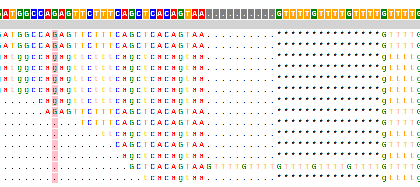

pybamview
Browser-based application for viewing bam alignments
PyBamView is a python-based application that allows you to view BAM sequence alignments through your web browser. It was inspired by the samtools tview tool, and was motivated by the need to better visualize alignments with complex insertions/deletions across multiple samples, which is not handled well by current broswers such as IGV and the UCSC Genome Browser.  PyBamView is run locally, without the need to upload large alignment/genome files to external sites, and provides text alignments that are fast and easy to navigate. Take a look at the example and my blog post to learn more.*Your feedback is welcome! Email mgymrek AT mit DOT edu or tweet at @mgymrek*